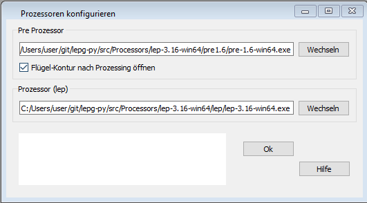

Konfiguration der beiden Prozessoren¶
Bevor die Pre- und Prozessor ausgeführt werden können muss lepg wissen wo diese sind.

Mit der Schaltfläche hinter dem Anzeigefeld in dem der Pfad und der Prozessorname angezeigt wird kann der entsprechende Setup Dialog gestartet werden.
Wenn du das fertige lepg Packet verwendest, findest du die Prozessoren im Unterverzeichnis Processors.
Darin gibt es jeweils einen Unterordner pro Betriebssystem. Der Pre-Prozessor ist darin im Ordner pre… der Prozessor im Ordner lep.
- Ausgewählt werden jeweils die ausführbaren Dateien:
Windows: .exe
Linux: .out
Mac: .o
Beispiel für Windows:
Processors
|-lep-3.16-win64
|-lep
|-lep-3.16-win64.exe <- Prozessor
|-man
|-png
|-pre1.6
|-pre-1.6-win64.exe <- Pre-Prozessor
In den Ordnern wo die Prozessoren sind werden jeweils auch die Ausgabedateien erzeugt. Wenn du also nach einem Prozessordurchlauf die Meldung erhälst, dass die Dateien erfolgreich erzeugt worden sind, dann findest du sie genau wieder in den oben beschriebenen Ordnern.
Flügel-Kontur nach Prozessing öffnen¶
Wenn diese Checkbox aktivert ist, dann wird nach einem Start des Pre-Prozessors automatisch das Fenster Flügel-Kontur geöffnet und aktualisiert.